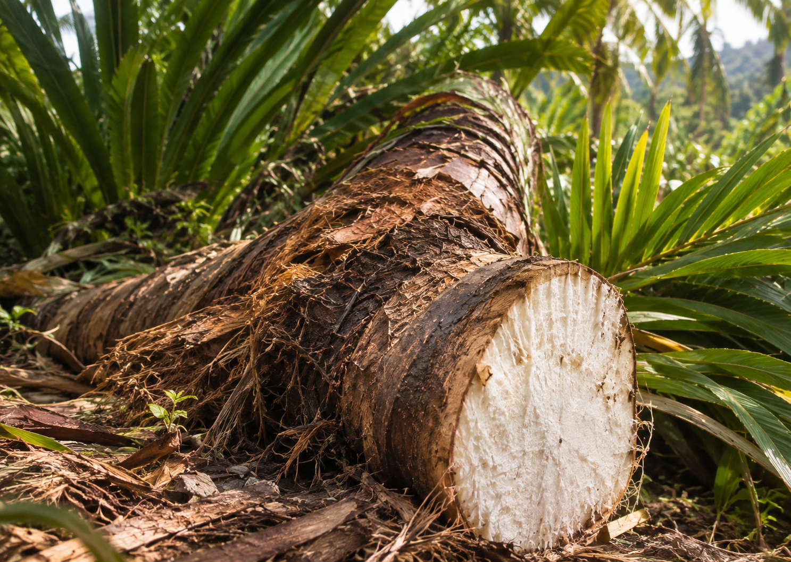

01 —
Apa itu Sagu?
Sagu adalah tepung pati yang diekstrak dari batang pohon rumbia (Metroxylon sagu). Satu pohon sagu dapat menghasilkan ratusan kilogram tepung yang menjadi sumber karbohidrat utama bagi masyarakat di kawasan timur Indonesia.